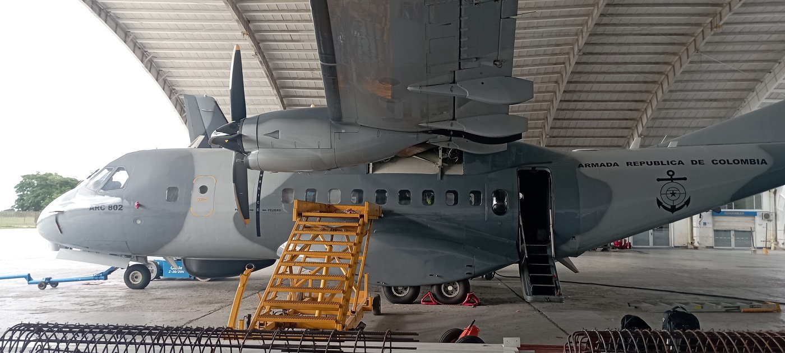

Aeronave CN 235
menu
menu
menu
SISTEMA DE INDICACION DE TRASVASE DE COMBUSTIBLE
EL PRESENTE SISTEMA SE ENCUENTRA EN DESARROLLO Y SE ESTIMA UN PERIODO DE UNAS SEMANAS PARA SU PUESTA EN MARCHA.

SISTEMA DE INDICACION DE TRASVASE DE COMBUSTIBLE
flight
SISTEMA DE VENTILACION DE DEPOSITOS DE COMBUSTIBLE
flight
SISTEMA DE NIVEL MINIMO DE COMBUSTIBLE
flight
SISTEMA DE INDICACION DE TEMPERATURA DE COMBUSTIBLE
flight